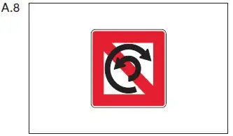
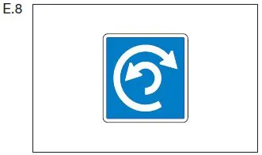
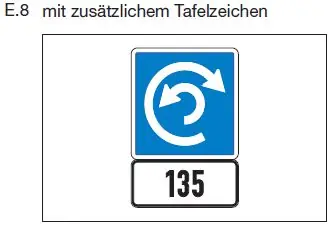

§ 6.13 Wenden
Binnenschifffahrtsstraßen-Ordnung
1. Ein Fahrzeug darf nur wenden,
a) nachdem es sich vergewissert hat, dass der übrige Verkehr unter Berücksichtigung der nachstehenden Nummern 2 und 3 dies ohne Gefahr zulässt und
b) ein anderes Fahrzeug nicht gezwungen wird, unvermittelt seinen Kurs oder seine Geschwindigkeit zu ändern.
2. Sofern das beabsichtigte Manöver ein anderes Fahrzeug dazu zwingt oder zwingen kann, von seinem Kurs abzuweichen oder seine Geschwindigkeit zu ändern, muss das Fahrzeug, das wenden will, seine Absicht rechtzeitig wie folgt ankündigen:
a) durch „einen langen Ton, einen kurzen Ton“, wenn es über Steuerbord wenden will;
b) durch „einen langen Ton, zwei kurze Töne“, wenn es über Backbord wenden will.
3. Das andere Fahrzeug muss daraufhin, sofern dies nötig und möglich ist, seine Geschwindigkeit und seinen Kurs ändern, damit das Wenden ohne Gefahr geschehen kann.
4.
Auf einer durch das Tafelzeichen A.8 (Anlage 7) gekennzeichneten Strecke ist das Wenden verboten. |  |
Ist eine Strecke durch das Tafelzeichen E.8 (Anlage 7) gekennzeichnet, wird dem Schiffsführer empfohlen, dort zu wenden, wobei die in den Nummern 1 bis 3 geregelten Anforderungen zu beachten sind. |  |
Ist eine Strecke durch das Tafelzeichen E.8 (Anlage 7) mit einer unterhalb angebrachten zusätzlichen rechteckigen weißen Tafel gekennzeichnet, wird dem Schiffsführer empfohlen, mit einem Fahrzeug bis zu der auf der zusätzlichen Tafel angegebenen Länge und der auf der Wasserstraße zulässigen Abladetiefe, dort zu wenden, wobei die in den Nummern 1 bis 3 geregelten Anforderungen zu beachten sind. |  |